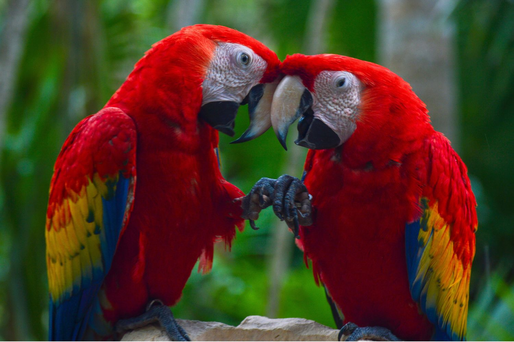
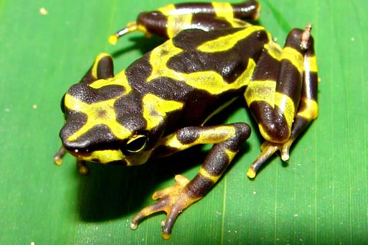
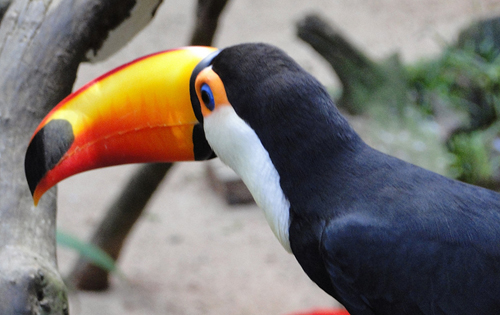

¿Qué son?
Se definen como especies que no son propias de un ecosistema o región (por ejemplo, un tigre es exótico en Europa). Como mascotas, incluyen cualquier especie no convencional que se comercializa legalmente.

Los animales exóticos son especies no nativas o no tradicionales, como reptiles, aves, pequeños mamíferos (hurones, conejos) y anfibios, mantenidos fuera de su hábitat natural. A diferencia de perros y gatos, requieren cuidados especializados, entornos específicos y veterinarios expertos debido a sus complejas necesidades de nutrición y salud



Se definen como especies que no son propias de un ecosistema o región (por ejemplo, un tigre es exótico en Europa). Como mascotas, incluyen cualquier especie no convencional que se comercializa legalmente.

Pequeños mamíferos: Hurones, conejos, cobayas, petauros del azúcar. Reptiles: Tortugas, serpientes (pitón real), lagartos (varano). Aves: Loros, agapornis.

Necesitan dietas específicas, temperaturas reguladas (especialmente reptiles) y enriquecimiento ambiental.

Para asegurar el bienestar de estas especies, es indispensable acudir a veterinarios especializados.